限时回归！两个月时间，手把手教会你scRNA-seq数据分析！
原文：https://mp.weixin.qq.com/s?__biz=MzAwMzIzOTk5OQ==&mid=2247535408&idx=1&sn=1f3b4b99bab378887d11dd83fd87feb7&chksm=9b3c3260ac4bbb768ffab3ba27706013630b71d7b100cead120f07a26f7257af5a5e5a0208b4#rd 合集：生信基地

别怕学不会，只怕你不学

 去年推出的scRNA-seq数据分析全程班限时回归：2026.04~06，为期两个月在生信基地（线上/线下均可参与），“手把手”的带大家完成scRNA-seq数据分析学习。
去年推出的scRNA-seq数据分析全程班限时回归：2026.04~06，为期两个月在生信基地（线上/线下均可参与），“手把手”的带大家完成scRNA-seq数据分析学习。
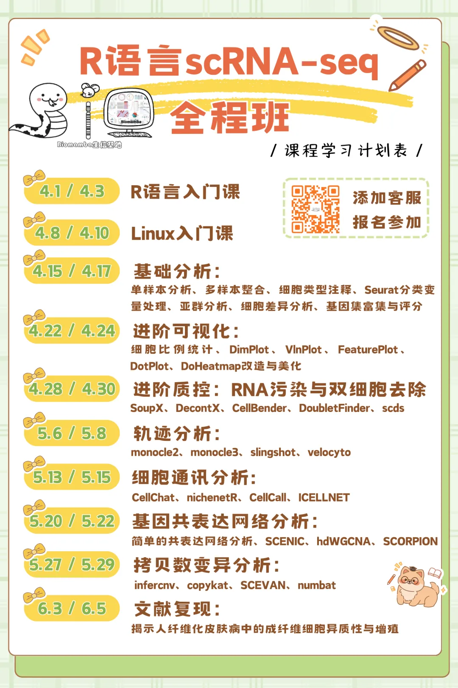
教单细胞，我们是专业的！Biomamba的单细胞教程播放量已经48.8w+。小伙伴们的发文致谢可见：致谢合辑。https://www.bilibili.com/video/BV1S44y1b76Z/
交流中我们发现，由于缺少编程、单细胞、文章套路等基本知识，大家自学并不能完全自学掌握单细胞分析技能。因此，我们推出了全新的《scRNA-seq数据分析小白全程班》。2026.04~06，为期两个月在生信基地（线上/线下均可参与，错过直播也可以加入录播/答疑+循环开课）“手把手”的带大家完成scRNA-seq数据分析学习。拒绝生信快餐！课后欢迎大家随时在群里对课程内容提问~。参与此次课程你将获得：1、为期两个月单细胞数据分析陪伴式教学。2、加入《scRNA-seq数据分析小白全程班》群聊，三年内课程指导、答疑、回放、直播复听，相信足够覆盖你的硕博生涯学习。3、开箱即用的单细胞分析镜像，256GB内存、500GB硬盘、20线程服务器3个月使用权。4、scRNA-seq骨灰级分析手册、代码、测试文件（~300GB、1150个文件）。 通过两个月的学习，你能够绘制上百种单细胞图表，以下为部分图片集锦：
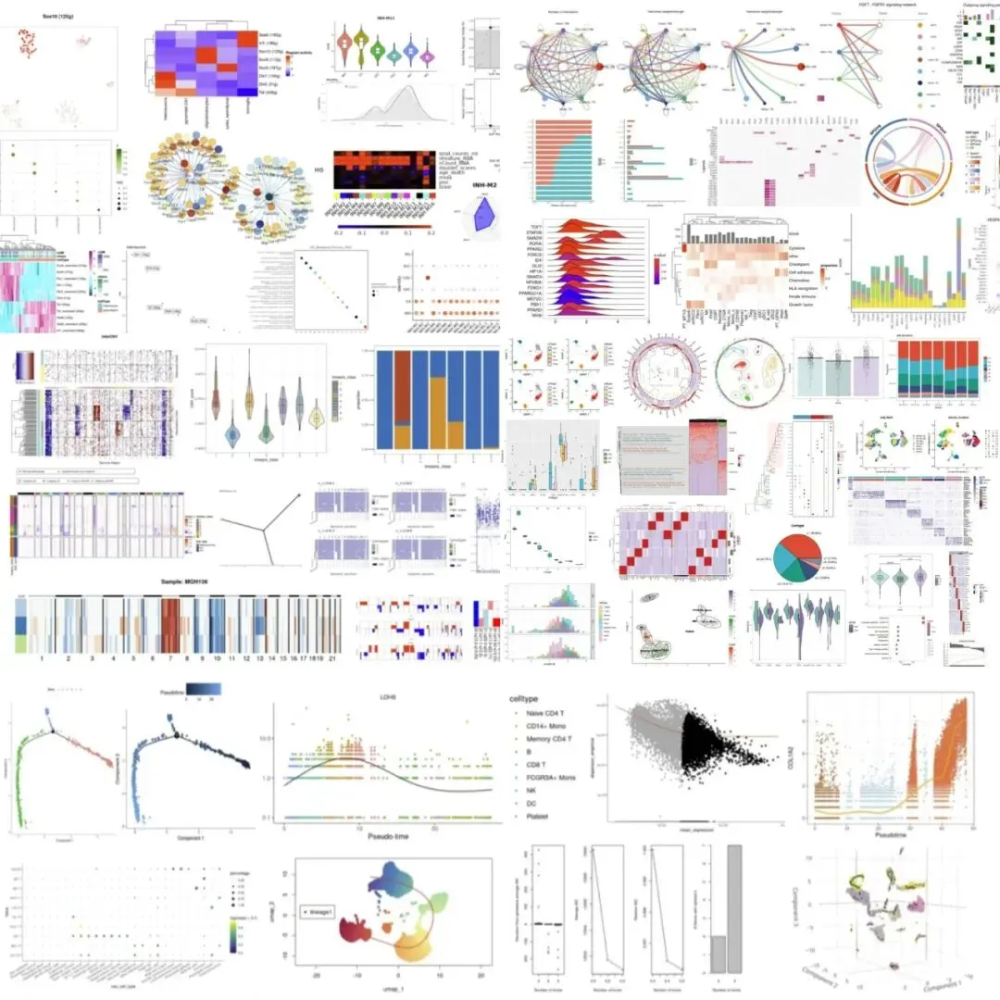
报名联系客服微信[ Biomamba_zhushou]：


内容计划&大纲
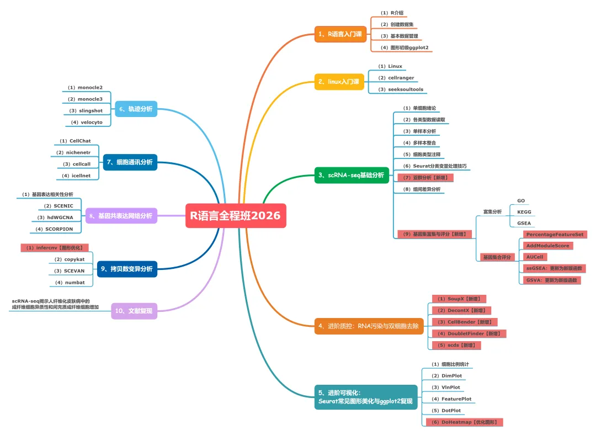
学习资料一览
通过这次全程学习，你将获得并掌握以下学习手册与资料：
R语言入门
同我们以前的课程一样，我们给大家准备了学习手册和学习资料，大家可联系客服微信[Biomamba_zhushou]领取：
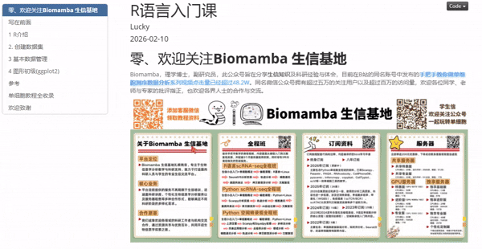
R语言教程目录：
1 R介绍
1.1 R下载与安装
1.1.1 RStudio
1.1.2 R帮助函数
1.1.3 用于管理R工作区的帮助函数
1.2 包
1.2.1 包的基本函数
1.2.2 包处理大型数据集的示例展示
2 创建数据集
2.1 理解数据类型
2.2 数据结构
2.2.1 向量(vector)
2.2.2 矩阵(matrix)
2.2.3 数组(array)
2.2.4 数据框(data)
2.2.5 因子(factor)
2.2.6 列表(list)
2.3 数据输入
2.3.1 从带分隔符的文本文件导入数据
2.3.2 导入Excel数据
3 基本数据管理
3.1 创建新变量
3.2 变量的重编码(recoding)
3.3 变量的重命名
3.4.缺失值（NA）
3.5 类型判断和转换
3.6 数据排序
3.7 数据集的合并
3.8 选取变量
3.9 选取观测值
3.10 subset()函数选择观测值或变量
3.11 剔除变量
3.12 dplyr包
3.13 使用管道操作符对语句进行串接
4 图形初级(ggplot2)
4.1 使用ggplot2包创建图形
4.1.1 函数ggplot2()
4.1.2 geom()函数
4.1.3 分组
4.1.4 标尺
4.1.5 刻面
4.1.6 标签
4.1.7主题
4.2 ggplot2包的详细信息
4.2.1 放置数据和映射选项
4.2.2 将图形作为对象使用
4.2.3 保存图形
Linux入门

 同我们以前的课程一样，我们给大家准备了学习手册和学习资料，大家可联系客服微信[Biomamba_zhushou]领取：
同我们以前的课程一样，我们给大家准备了学习手册和学习资料，大家可联系客服微信[Biomamba_zhushou]领取：
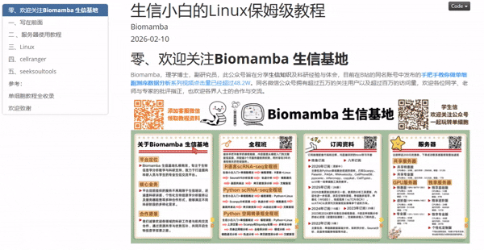
Linux教程目录：一、写在前面
二 、服务器使用教程
三、Linux
3.1 什么是Linux系统
3.2 如何获取Linux系统
3.3 命令行与基本命令
3.4 Linux的文件目录系统
3.5 路径查看与切换
3.6 通配符
3.7 删除文件
3.8 复制和移动
3.9 用户与组群概念
3.10 用户管理
3.11 权限管理
3.12 快捷键
3.13 重定向
3.14 管道符
3.15 文件查找
3.16 软链接与硬链接
3.17 文件压缩和解压缩
3.18 文本查看
3.19 文本浏览器
3.20 vim文本编辑器
3.21 文本处理
3.22 grep
3.23 sed
3.24 awk
3.25 shell脚本
3.26 if条件语句
3.27 循环
四、cellranger
4.1 软件下载和安装
4.2 数据准备
4.3 参数说明
4.4 执行cellranger分析
4.5 主要输出文件
五、seeksoultools
5.1 软件下载和安装
5.2 数据准备
5.3 参数说明
5.4 执行seeksoultools分析
5.5 主要输出文件

单细胞基础分析
同我们以前的课程一样，我们给大家准备了学习手册和学习资料，大家可联系客服微信[Biomamba_zhushou]领取：
教程图片集锦：
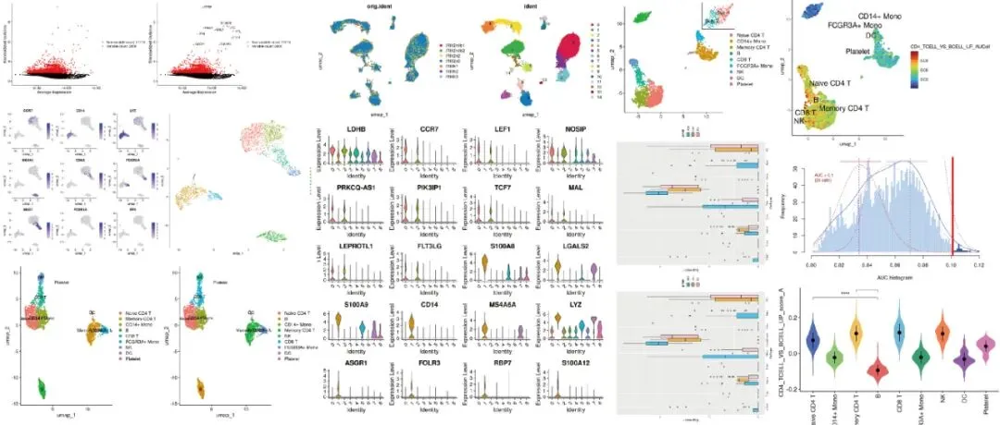
**
**
单细胞基础分析学习手册
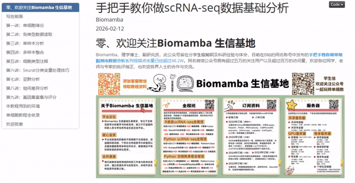
单细胞基础分析教程目录 ：一、写在前面二、单细胞绪论2.1 课程安排2.2 视频及测试文件2.3 学习版服务器使用教程三、各类型数据读取3.1 简介3.2 视频及测试文件3.3 环境准备3.4 代码四、单样本分析4.1 R包安装与加载4.2 数据读入并创建Seurat对象4.3 质控数据及可视化
4.4 细胞分群4.5 分群后的可视化五、多样本整合5.1 单纯的merge5.2 anchor(CCA)5.3 harmony 速度快、内存少六、细胞类型注释6.1 准备工作6.2 方法一:查数据库6.3 方法二：通过singleR进行注释6.4 方法三:自定义singleR的注释6.5 Seurat内置的TransferData七 、亚群分析
7.1 测试数据
7.2 Seurat::FindSubCluster(）
7.3 取子集重新聚类分群
八、组间差异分析
8.1 读入并检查数据
8.2 差异分析
8.3 解放生产力 通过循环自动计算差异基因
8.4 可视化方法
8.5 提取表达量，用ggplot2 DIY一个箱线图
九、基因集富集与评分
9.1 富集分析
9.2 基因集评分
十、本教程用到的环境十一、单细胞教程全收录十二、欢迎致谢
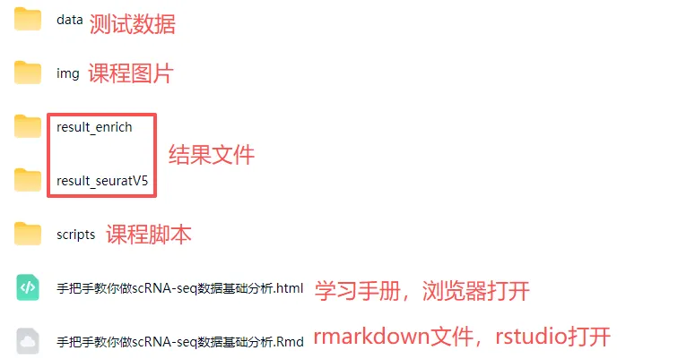
测试文件，总大小5.44GB
单细胞进阶可视化
同我们以前的课程一样，我们给大家准备了学习手册和学习资料，大家可联系客服微信[Biomamba_zhushou]领取：教程图片集锦：
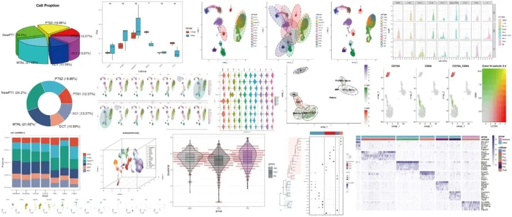
单细胞进阶可视化学习手册
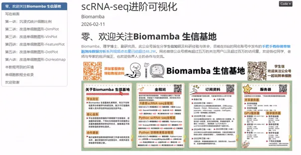
单细胞进阶可视化教程目录：
一、写在前面
二、沉浸式统计细胞比例
2.1 准备工作
2.2 饼图
2.3 甜甜圈图
2.4 堆积柱状图
2.5 箱线图
三、改造单细胞图形-DimPlot
3.1 准备工作
3.2 调整DimPlot参数
3.3 ggplot2直接中的DIY
3.4 3D降维图与动图
3.5 一些造好的轮子
四、改造单细胞图形-VlnPlot
4.1 准备工作
4.2 调整VlnPlot参数
4.3 ggplot2直接中的DIY
4.4 ggplot2改造
五、改造单细胞图形-FeaturePlot
5.1 准备工作
5.2 调整FeaturePlot参数
5.3 ggplot2直接中的DIY
六、改造单细胞图形-DotPlot
6.1 准备工作
6.2 DotPlot参数
6.3 DotPlot及其自带参数美化
6.4 DotPlot联合ggplot2美化
6.5 ggplot2复现DotPlot
七、改造单细胞图形-DoHeatmap
7.1 加载数据
7.2 DoHeatmap参数
7.3 DoHeatmap及其自带参数美化
7.4 ggplot2复现DoHeatmap
7.5 pheatmap复现DoHeatmap
7.6 complexheatmap复现DoHeatmap
7.7 拓展：基因表达均值热图
八、本教程用到的环境
九、单细胞教程全收录
十、欢迎致谢
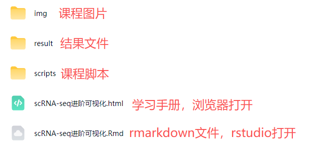
测试文件，总大小67.68MB
单细胞进阶质控：RNA污染与双细胞去除
同我们以前的课程一样，我们给大家准备了学习手册和学习资料，大家可联系客服微信[Biomamba_zhushou]领取：教程图片集锦：
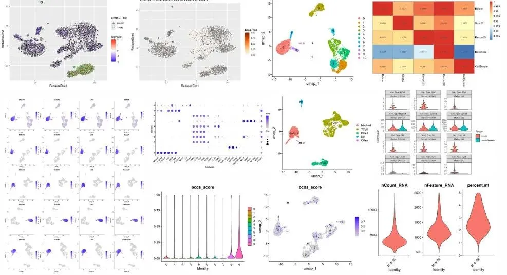
单细胞去污染学习手册
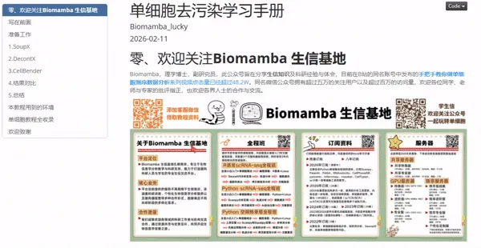
单细胞去污染教程目录：
一、写在前面
二、准备工作
2.1 编程基础2.2 硬件基础
三、SoupX
3.1 文献解读3.2 包的安装和导入3.3 数据下载3.4 数据读取3.5 向SoupChannel对象中添加额外的元数据3.6 估计污染比例3.7 矫正表达矩阵3.8 PBMC8K实战
四、DecontX
4.1 文献解读4.2 包的安装和导入4.3 数据读取4.4 方案一：只输入一个过滤后的细胞矩阵4.5 方案二：提供raw/droplet矩阵
五、CellBender
5.1 文献解读5.2 安装5.3 数据测试5.4 CellBender 运行输出文件说明5.5 降维分群
六、结果比对
6.1 细胞数目对比6.2 交集细胞对比6.3 细胞类型偏好性对比6.4 去污染后基因表达对比
七、总结
八、本教程用到的环境
九、单细胞教程全收录
十、欢迎致谢
双细胞过滤手册
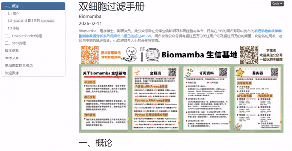
双细胞过滤教程目录：
一、概论
1.1简介
1.2doublet计算工具的benchmark
1.3小结
二、DoubletFinder流程
2.1简介
2.2实操
2.2.1环境准备
2.2.2输入数据
2.2.3pN-pK计算
2.2.4同源doublets预测
2.2.5比例评估
2.2.6取出singlet
三、scds流程
3.1 包的安装和加载
3.1.1安装
3.1.2可能遇到的报错
3.1.3加载包
3.2 实操
3.2.1数据读取
3.2.2doublets score计算
3.2.3整理并查看doublets score分布情况
3.2.4删除doublets
3.2.5scds的其它内置算法
四、版本信息
五、参考文献
六、单细胞教程全收录
七、欢迎致谢
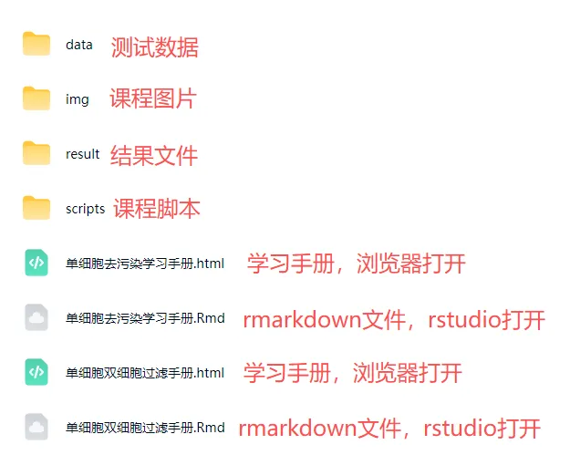
测试文件，总大小5.75GB
单细胞进阶分析——轨迹分析
同我们以前的课程一样，我们给大家准备了学习手册和学习资料，大家可联系客服微信[Biomamba_zhushou]领取：
教程图片集锦：
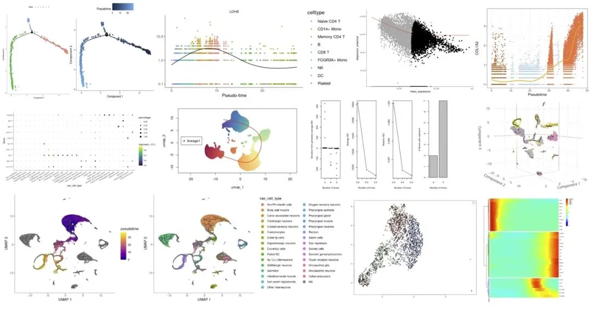
轨迹分析学习手册
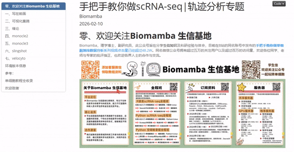
轨迹分析教程目录 ：一、写在前面二、可视化集锦三、绪论1. 定义2. 拟时序分析作用3. 不同拟时序软件的比较 3.1 总体评价结果 3.2 准确性 3.3 可扩展性 3.4 稳定性 3.5 软件、文档和手稿方面的可用性四、monocle21. 简介2. 安装monocle23. monocle2对象的格式4. 初探monocle2 4.1 预处理、质控 4.2 细胞降维、分群、鉴定5. monocle2实战 5.1 半监督式拟时序 5.2 非监督式的 6. 下游探索 6.1 DimPlot和FeaturePlot 6.2 VlnPlot 6.3 ggplot2绘图 6.4 细胞比例探索 6.5 基因表达量的探索五、monocle31. 简介2. monocle3和monocle2的主要区别 2.1 monocle3的主要功能 2.2 先谈缺点 2.3 再看看优点3. 安装monocle3 3.1 R语言中的安装 3.2 通过conda安装4. 初探monocle3 4.1 monocle3对象的构建 4.2 预处理、质控 4.3 细胞降维、分群、鉴定 4.4 取子集以及亚群分析5. monocle3实战 5.1 预处理数据 5.2 拟时序分析6. 下游探索 6.1 DimPlot和FeaturePlot 6.2 VlnPlot 6.3 ggplot2绘图 6.4 细胞比例探索 6.5 基因表达量的探索六、slingshot1. 简介2. 官方教学解读 2.1 介绍 2.2 上游分析 2.3 下游分析 2.4 功能详细解说3. 外部数据实操 3.1 单细胞数据下载：GSE163973 3.2 测试数据预处理 3.3 细胞聚类 3.4 关键细胞 3.5 拟时序分析 3.6 探究分化过程中的基因表达4. 下游探索 4.1 DimPlot和FeaturePlot 4.2 VlnPlot 4.3 ggplot2绘图 4.4 细胞比例探索 4.5 基因表达量的探索七、velocyto1. RNAvelocity原文解读
1.1 摘要
1.2 结果
1.3 小结
2. 数据下载
2.1 bam文件
2.2 repeatmask文件
2.3 gtf文件
3. 软件安装
4. 生成loom文件
5. RNA速率分析实战
5.1 安装R包
5.2 加载R包
5.3 处理测试数据
5.4 统计spliced和unspliced区域
5.5 RNA速率推断
八、环境版本信息九、参考十、单细胞教程全收录十一、欢迎致谢
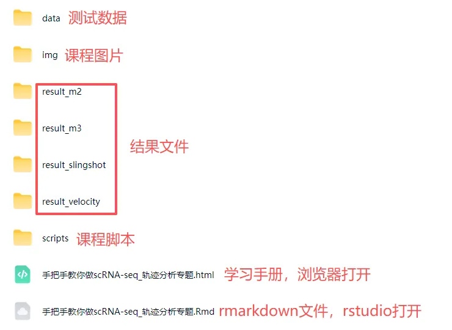
测试文件，总大小2.77GB
单细胞进阶分析——细胞通讯分析
同我们以前的课程一样，我们给大家准备了学习手册和学习资料，大家可联系客服微信[Biomamba_zhushou]领取：
教程图片集锦：
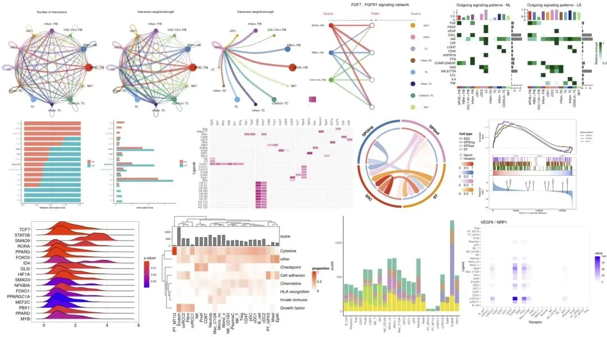
细胞通讯分析学习手册
细胞通讯分析教程目录 ：
一、写在前面
二、可视化集锦
三、绪论
3.1 定义
3.2 不同细胞通讯软件的比较
（1）互作预测过程
（2）主要研究成果
3.3 实验追踪细胞间相互作用
3.4 总结
四、cellchat
4.1 简介
4.2 安装并加载R包
4.3 下载、读取、创建cellchat对象
4.4 载入数据库并开始计算
4.5 可视化
4.6 进阶可视化
4.7 配受体展示
4.8 通路展示
4.9 多个细胞通讯通路气泡图可视化
4.10 多组别细胞通讯
（1）准备工作
（2）可视化
五、nichenetr
5.1 准备工作
（1）安装并加载R包
（2）表达矩阵获取
（3）下载先验模型
5.2 细胞通讯分析（1）定义sender与receiver（2）定义一组感兴趣的基因集（3）获取配受体基因表达矩阵（4）配体活性分析（5）推断受体以及配体潜在调控靶基因与配体的调控活性（6）sender中配体的组间差异log fold change值（7）可视化拼盘5.3 差异细胞通讯分析（1）准备工作（2）定义niches（3）计算niches的差异基因（4）定义感兴趣的基因组（5）计算配体活性并推断配受体对（6）计算配体、受体、target的表达量（7）通过受体表达量评估配受体对互作强度（8）计算配受体对权重（9）差异可视化
六、cellcall****
6.1 软件安装和加载
6.2 数据准备6.3 创建cellchat对象6.4 推断细胞-细胞通讯得分6.5 通路活动分析6.6 可视化（1）圈图 （2）热图****（3）桑葚图********（4）TF富集分析图********（5）山脊图****6.7 结果保存
七、icellnet********
7.1 软件安装和加载
7.2 数据准备7.3 数据预处理7.4 在感兴趣的集群上应用icellnet管道7.5 计算细胞通讯分数7.6 结果可视化（1）热图（2）柱形图7.7 在TME内识别ccRCC2特定的通信信道（1）计算ccRCC2的特定相互作用************（2）可视化7.8 结果保持八、环境版本信息******** 九、参考十、单细胞教程全收录********十一、欢迎致谢****
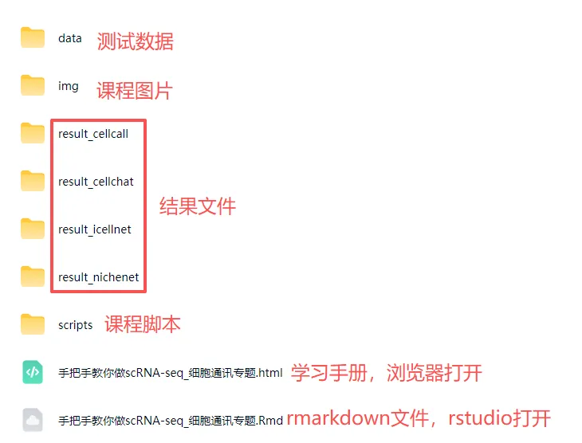
测试文件，总大小6.05GB
单细胞进阶分析——基因表达网络分析
同我们以前的课程一样，我们给大家准备了学习手册和学习资料，大家可联系客服微信[Biomamba_zhushou]领取：
教程图片集锦：
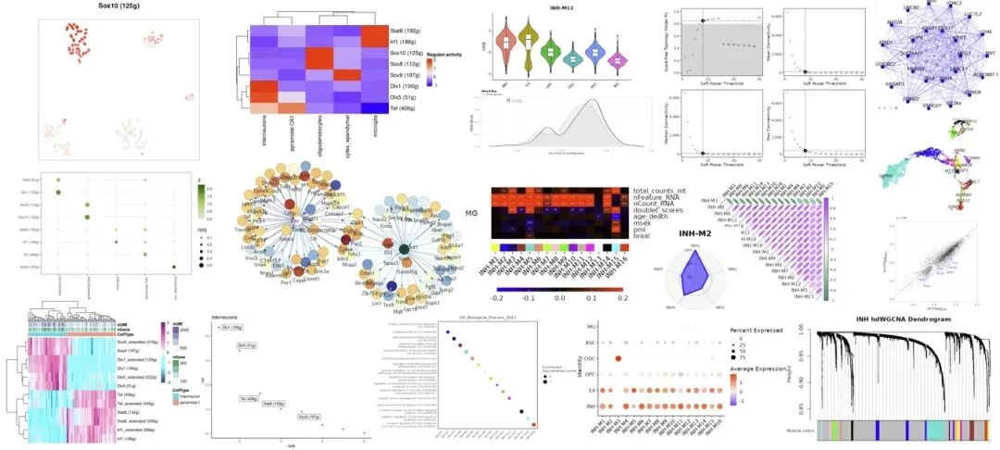
基因表达网络分析学习手册
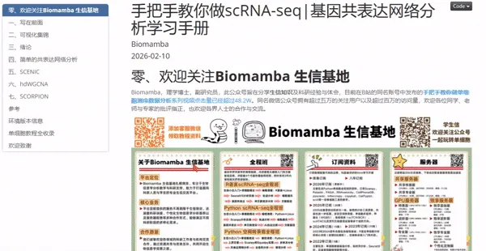
基因表达网络分析教程目录 ：
一、写在前面
二、可视化集锦
三、绪论
3.1 研究背景
3.2 主要结果
（1）合成网络数据集
（2）精选模型数据
（3）实验性的单细胞RNA-Seq数据集
3.3 小结
四、简单的共表达网络分析
4.1 加载R包
4.2 计算相关性
五、SCENIC
5.1 软件安装
5.2 加载R包5.3 官方手册5.4 测试数据（1）直接读取loom文件（2）创建loom文件5.5 RcisTarget数据库（1）文件获取（2）RcisTarget数据库文件初始化5.6 分析流程（1）初步设置（2）共表达网络(Co-expression network)计算（3）构建基因调控网络(Gene regulatory network, GRN)（4）runSCENIC_3_scoreCells()分解步骤（5）二元矩阵及可视化（6）对regulon活性进行聚类分群、降维分析5.7 下游探索工作（1）交互式的探索（2）在tSNE中绘制TF的表达水平（3）探究regulon，靶基因，motif的关系（4）用热图探究细胞与regulon的关系（5）调控网络的绘制
六、hdWGCNA****
6.1 数据准备
（1）加载R包
6.2 数据读入6.3 为 WGCNA 设置 Seurat 对象6.4 创建metacells6.5 构建共表达网络 （1）设置表达矩阵****（2）设置软阈值6.6 可视化（1）模块特征图********（2）雷达图********（3）相关性热图********（4）DotPlot********（5）VlnPlot********（6）网络图********（7）UMAP图********（8）module与表型数据相关性分析********（9）Enrichment analysis基因集（module）富集分析**** （10）模块之间的差异分析
七、SCORPION********
7.1 安装R包
7.2 加载R包7.3 示例数据展示7.4 小鼠肠上皮单细胞数据（1）安装R包（2）数据准备（3）scorpion分析7.5 人类胚胎干细胞（1）定义QC质控函数（2）导入单细胞数据（3）单细胞数据处理（4）单细胞分群展示（5）8C-like细胞鉴定（6）8C-like和其他亚群差异基因鉴定（7）导入TF和PPT网络（8）scorpion分析7.6 结果可视化和解读（1）导入Hnf4α和Hnf4γ分析结果 （2）Hnf4a密度图****（3）Hnf4a差异值分布********（4）Hnf4g密度图********（5）Hnf4g差异值分布**** （6）Hnf4a线性回归与靶基因富集分析****（7）Hnf4g线性回归与靶基因富集分析********（8）加载DUX4分析结果********（9）转录因子调控分布散点图********（10）DUX4密度图********（11）DUX4差异值分布********（12）DUX4线性回归与靶基因富集分析八、参考九、环境版本信息十、单细胞教程全收录十一、欢迎致谢****
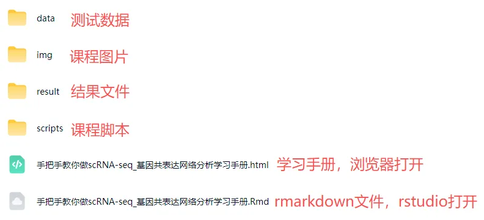
测试文件，总大小12.53GB
单细胞进阶分析——拷贝数变异分析
同我们以前的课程一样，我们给大家准备了学习手册和学习资料，大家可联系客服微信[Biomamba_zhushou]领取：
教程图片集锦：
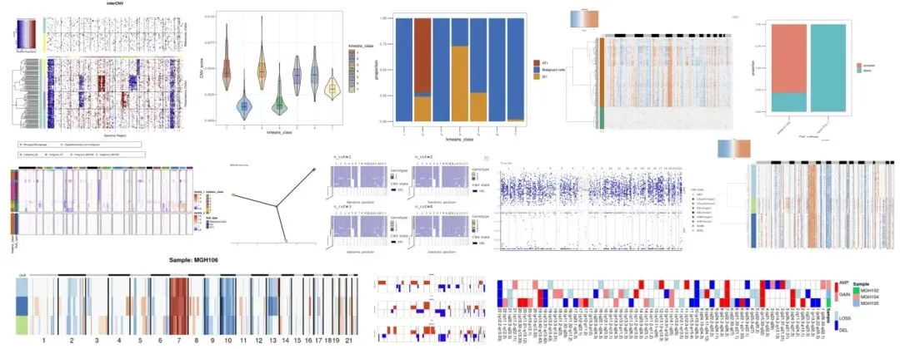
**
**
拷贝数变异分析学习手册
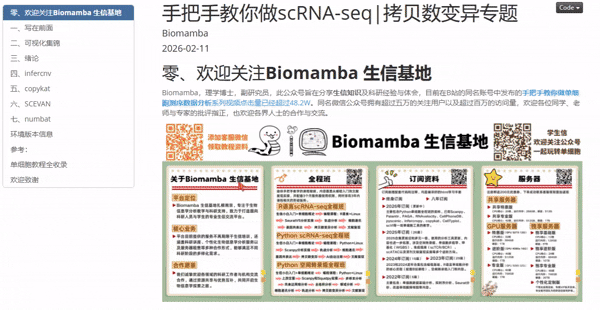
拷贝数变异分析教程目录 ：
一、写在前面
二、可视化集锦
三、绪论
3.1 定义
3.2 主要研究成果
（1）区分肿瘤细胞与正常细胞
（2） 推断的拷贝数变异（CNA）谱的准确性
（3） 亚克隆结构推断准确性的评估
（4）计算效率
3.3 小结
四、infercnv
4.1 简介
4.2 安装
4.3 输入文件
4.4 infercnv workflow
4.5 infercnv实战
（1）数据概况
（2）infercnv流程
（3）热图优化
（4）小提琴图
五、copykat
5.1 copykat介绍
（1）简介
（2）copykat工作流程描述
（3）性能评估
（4）实体肿瘤中肿瘤细胞和正常细胞的分类
（5）应用于其他scRNA-seq技术
（6）推断乳腺肿瘤的克隆亚结构
（7）小结
5.2 copykat流程（1）安装（2）counts矩阵预处理（3）常用参数（4）copykat（5）整理数据（6）绘制热图5.3 copykat实战（1）数据概况（2）copykat（3）整理数据（4）热图绘制（5）探究一下拷贝数变异与原来亚群之间的关系（6）CNA score小提琴图
六、SCEVAN****
6.1 安装R包
6.2 加载R包6.3 单样本分析（1）加载数据（2）执行分析（3）结果查看6.4 多样本分析（1）加载数据 （2）执行分析（3）结果查看6.5 联合Seurat对象（1）创建Seurat对象**** （2）将拷贝数变异结果加入Seurat对象 （3）降维分群（4）可视化****
七、numbat********
7.1安装R包
7.2加载R包************7.3 数据下载7.4 等位基因数据准备（1）运行参数解释 （2）示例脚本（3）可能出现的报错（4）执行分析7.5 运行numbat（1）运行参数解释********（2）运行numbat7.6 结果解读（1）拷贝数景观和单细胞系统发育 （2）在系统发育上完善亚克隆（3）共识拷贝数区段（4）pseudobulks水平拷贝数变异（5）进化树八、环境版本信息 九、参考十、单细胞教程全收录********十一、欢迎致谢****
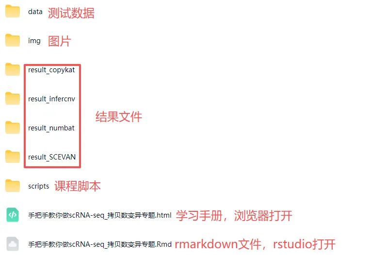
测试文件，总大小35.46GB

文献复现
复现图片集锦
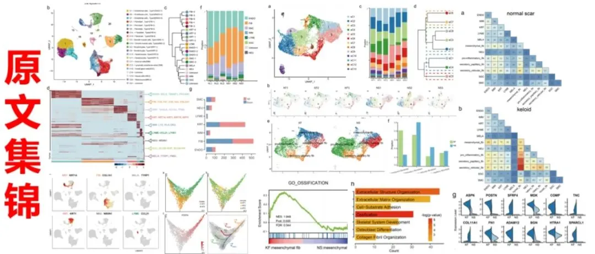
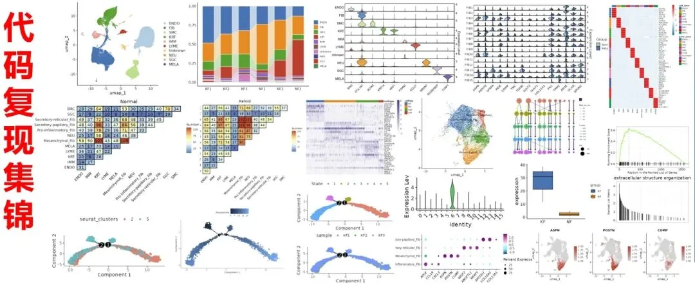
学习手册以html文件格式提供，可在浏览器中打开并翻阅学习
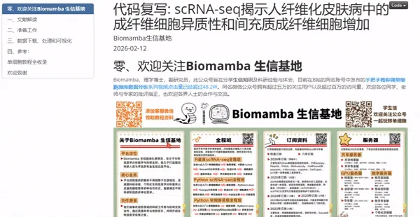
教程目录 ：
一、文献解读
1.0 复现集锦
(1)原文集锦(2)代码复现集锦
1.1 背景介绍
1.2 主要内容
(1)scRNA-seq揭示正常瘢痕和纤维性皮肤病真皮组织的细胞异质(2)瘢痕疙瘩和正常瘢痕中成纤维细胞形成不同的细胞亚群(3)纤维化皮肤病中间充质成纤维细胞特征的鉴定(4)成纤维细胞亚群中的配体-受体相互作用分析(5)间充质成纤维细胞通过POSTN促进瘢痕中胶原蛋白表达(6)sC4成纤维细胞比sC1成纤维细胞更像间充质细胞(7)间充质成纤维细胞在硬皮病中增加
1.3 总结讨论
二、准备工作
2.1 硬件准备
2.2 单细胞基础
三、数据下载、处理和 可视化
1. 数据下载2. 读取数据（10X标准数据）（barcodes、features、matrix）3. 数据整合4. Seurat标准流程(harmony去批次)5. 细胞注释6. 细胞周期计算7. 数据可视化（1）分样本细胞比例柱形图（2）分样本细胞比例桑基图（3）UMAP降维图（4）Marker小提琴图（5）Marker FeaturePlot（6）Marker DotPlot（7）Marker热图8. 成纤维细胞亚群（1）亚群细分（2）分样本细胞比例柱形图（3）亚群分样本降维图（4）基因差异表达提琴图（5）细分注释（6）注释后Marker展示（7）Mesenchymal_Fib组间差异分析（8）Mesenchymal_Fib差异基因富集分析 9. 间充质成纤维细胞在纤维化皮肤疾病中的特性（1）分样本基因表达FeaturePlot（2）分组基因表达箱线图（3）亚群间差异基因热图（4）Mesenchymal_Fib相对其他FIB亚群上调差异基因富集（5）marker基因堆叠小提琴图 10. 细胞通讯分析（1）亚群标签映射回细胞大类（2）Normal组细胞通讯（3）Keloid组细胞通讯（4）细胞通讯热图11. 拟时序分析12. Mesenchymal_Fib两个亚群间差异和富集
文末下载链接中包含的内容：
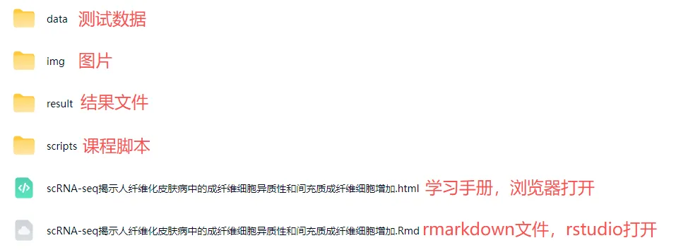
测试文件约12.17GB ，大家注意按需下载！

报名费用
两个月满满的课程只要4999￥，相信比小学生补课班还便宜。支持对公，目前可参与生信基地618活动！也欢迎看看我们的价值观：想钱想疯了？
线下学习环境
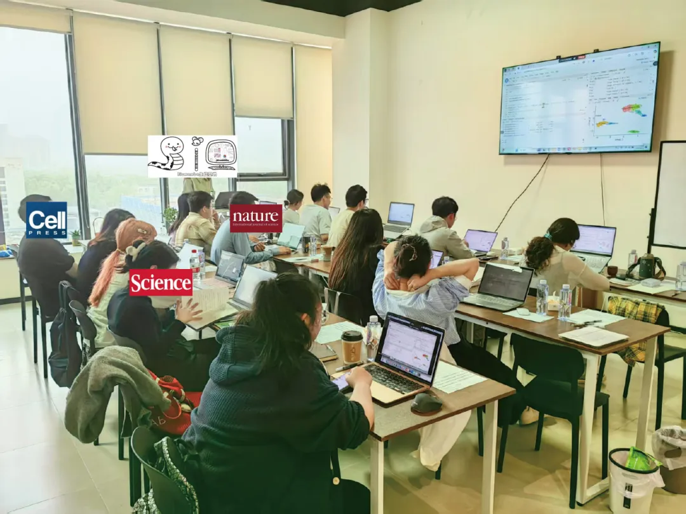地点 ：南京市江宁区，详细地址咨询客服微信[Biomamba_zhushou]
往期活动现场：
除了知识之外，现场还能够给大家提供：
茶水吧、咖啡机、零食柜
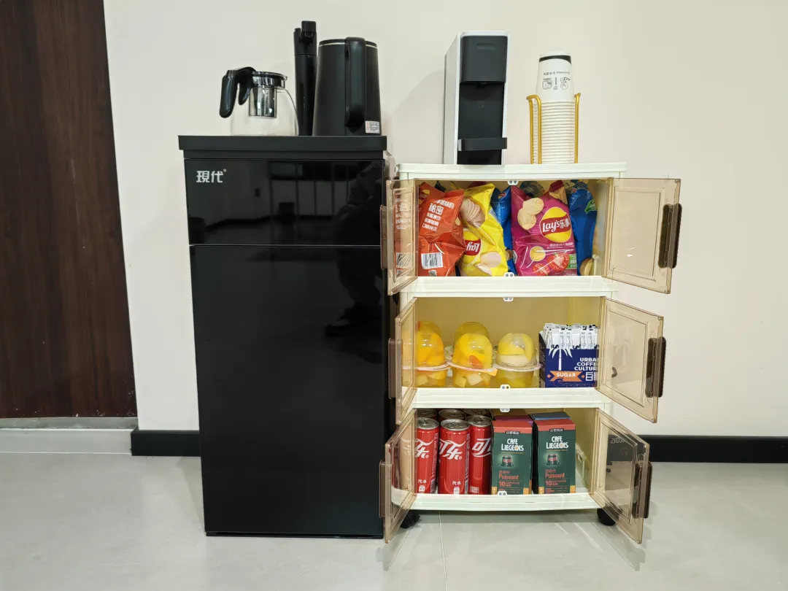
各类饮料、零食小吃


如何联系我们

 留一个领取资料、免费两周学习版服务器的微信号[Biomamba_zhushou]，方便各位随时交流。同时我们也构建了交流群矩阵，欢迎大家入群讨论。
大家可以阅读完这几篇之后添加给生信入门初学者的小贴士
如何搜索公众号过往发布内容
留一个领取资料、免费两周学习版服务器的微信号[Biomamba_zhushou]，方便各位随时交流。同时我们也构建了交流群矩阵，欢迎大家入群讨论。
大家可以阅读完这几篇之后添加给生信入门初学者的小贴士
如何搜索公众号过往发布内容
已有生信基地联系方式的同学无需重复添加
 您点的每个赞和在看，我都认真当成了喜欢
您点的每个赞和在看，我都认真当成了喜欢